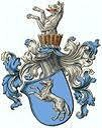

12307804730 Furste Boleslaw Hewelli Stodoranskij
Furste av Hevelli.

Född:
omkring 850.
Barn med ?
Barn:
Drahomira av Stodor (881 - 935)
Personhistoria
Årtal
Ålder
Händelse
850?
Födelse omkring 850
881
Dottern
6153902365 Princess Drahomira av Stodor
föds 881 Prag, Tjekien
[1]
900?
Barnbarnet
3076951182 Duke Boleslav I "den grymme"
föds omkring 900 Prag, Tjekien
[2]
935
Dottern
6153902365 Princess Drahomira av Stodor
dör 935
[1]
972
Barnbarnet
3076951182 Duke Boleslav I "den grymme"
dör 972
[2]
Källor
[1]
Finnfalla.se
[2]
Wikipedia